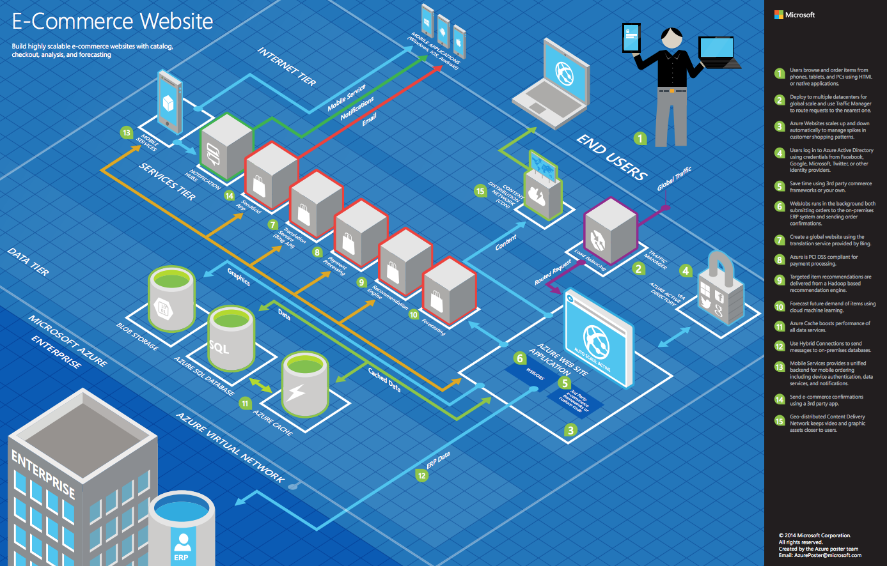

Information in this document, including URL and other Internet Web site references, is subject to change without notice. Unless otherwise noted, the example companies, organizations, products, domain names, e-mail addresses, logos, people, places, and events depicted herein are fictitious, and no association with any real company, organization, product, domain name, e-mail address, logo, person, place or event is intended or should be inferred. Complying with all applicable copyright laws is the responsibility of the user. Without limiting the rights under copyright, no part of this document may be reproduced, stored in or introduced into a retrieval system, or transmitted in any form or by any means (electronic, mechanical, photocopying, recording, or otherwise), or for any purpose, without the express written permission of Microsoft Corporation.
Microsoft may have patents, patent applications, trademarks, copyrights, or other intellectual property rights covering subject matter in this document. Except as expressly provided in any written license agreement from Microsoft, the furnishing of this document does not give you any license to these patents, trademarks, copyrights, or other intellectual property.
The names of manufacturers, products, or URLs are provided for informational purposes only and Microsoft makes no representations and warranties, either expressed, implied, or statutory, regarding these manufacturers or the use of the products with any Microsoft technologies. The inclusion of a manufacturer or product does not imply endorsement of Microsoft of the manufacturer or product. Links may be provided to third party sites. Such sites are not under the control of Microsoft and Microsoft is not responsible for the contents of any linked site or any link contained in a linked site, or any changes or updates to such sites. Microsoft is not responsible for webcasting or any other form of transmission received from any linked site. Microsoft is providing these links to you only as a convenience, and the inclusion of any link does not imply endorsement of Microsoft of the site or the products contained therein.
© 2020 Microsoft Corporation. All rights reserved.
Microsoft and the trademarks listed at https://www.microsoft.com/legal/intellectualproperty/Trademarks/Usage/General.aspx are trademarks of the Microsoft group of companies. All other trademarks are property of their respective owners.
Contents
In this whiteboard design session, you work with a group to design a solution for modernizing legacy on-premises applications and infrastructure by leveraging cloud services. As part of the modernization effort, application enhancements are added using a mix of web and mobile services, all secured using Azure Active Directory.
At the end of this whiteboard design session, your ability to design a modernization plan for organizations looking to move services from on-premises to the cloud will be improved.
Outcome
Analyze your customer's needs.
Timeframe: 15 minutes
Directions: With all participants in the session, the facilitator/SME presents an overview of the customer case study along with technical tips.
Meet your table participants and trainer.
Read all of the directions for steps 1-3 in the student guide.
As a table team, review the following customer case study.
Contoso, Ltd. (Contoso) is a new company in an old business. The company was founded in Auckland, New Zealand, in 2011, by senior life insurance executives. The ambitious new company provides a full range of long-term insurance services to help underinsured people.
Almost from the start, the company grew far faster than anticipated. An avalanche of business meant that the initial processes created to manage policy documentation became overloaded. Employees struggled to cope, even as the headcount rose from five to 110 during the first two years. "By the beginning of 2013, we had over 750,000 pages of partly hand-written policy documents filed in our offices," says Charlene Mathis, General Manager, Contoso. "Customer-facing employees could not retrieve policies quickly, and we faced a service bottleneck. Slow response times impacted customer service, and the ability to locate documents quickly cost us time and money."
To overcome these challenges, the founders launched a project to build an application that could digitize and file all existing policy documents and file new policies as brokers submit them. They also had requirements to allow automated document forwarding from brokers, secure access for brokers, access to policy information, and ready policy retrieval for a dispersed workforce. The result of this project was a custom Windows Forms application was named PolicyConnect. Contoso employees use PolicyConnect to enter essential policy metadata, including insured amount, beneficiary information, policy type, and any deductible and out-of-pocket requirements, and associate that with the digitized policy documents.
PolicyConnect was built using a traditional n-tier application architecture. The data access layer houses methods for interacting with the underlying SQL Server 2008 R2 database. A business logic layer handles things like user login and policy rules. The presentation layer provides the user interface (UI). The design follows a service-oriented architecture, with a series of Windows Communication Foundation (WCF) services representing the services and capabilities required for each tier. The application stores associated policy documents as PDF files on a file server accessible via an SMB network share on their local area network. PolicyConnect accesses these files using a canonical path (customer last name and policy number). A SQL Server 2008 R2 database houses the policy metadata for each policy document, which is currently entered manually into PolicyConnect by Contoso staff members. Contoso provided the following diagram about its current topology:

The application currently supports access via a virtual private network (VPN) connection for users outside the Contoso local area network. As such, Contoso brokers are unable to view data or documents unless granted VPN access. This requirement has proven to be time-consuming and frustrating for brokers.
Contoso employees rely on email as a workflow engine relative to the document management tasks. One group is responsible for scanning and cataloging while another group is responsible for assigning the policies to the specified broker. Manually written emails are sent to brokers when their customer's policies have been scanned and indexed. They are using Office 365. The company executives have frequent challenges in gauging productivity and throughput, given the manual workflow. They feel that they are blocked in quickly getting to the insights they need because each new question seems to need more custom development.
Contoso recently started investigating ways to leverage the cloud to modernize its policyholder system and begin addressing several issues with the existing PolicyConnect system. However, they lack any tangible experience with the cloud and are looking for guidance on how they can best modernize and take advantage of cloud technologies.
Contoso stated that their highest priority is addressing the end-of-support for SQL Server 2008 R2. They would like to migrate their SQL Server 2008 R2 database to a fully-managed SQL database in Azure. Once the database is in the cloud, they want to take advantage of some of the primary benefits that enabled by using a platform-as-a-service (PaaS) database service. According to Contoso, it does not use any of the "fancy" SQL Server features and hopes the migration can be a slam dunk. They would also like to understand better the performance and security features they might be able to leverage once their database is running in Azure.
Another top priority is making the system available to employees and brokers via web and mobile applications and eliminating the requirement for establishing a VPN connection. They also want to store policies in cloud storage for retrieval via these web and mobile applications. Both the web and mobile applications should permit policyholders to log in, review their information, and retrieve a PDF copy of their policy. An application programming interface (API), shared by both application, provides access to data and policy documents. The goal is to deploy the web application, database, and API to the cloud. Also, they want to learn more about lightweight, serverless architectures that may help them implement some API functionality more rapidly. They mentioned a possible use case of providing access to policy documents in storage.
As part of the application modernization process, Contoso would also like to learn more about how Azure Cognitive Search might be able to improve their ability to find policy documents. PolicyConnect stores all policy documents as opaque PDF files on a network file share, and key metadata is entered into the PolicyConnect application manually. Searching is limited to file names, and the limited metadata entered manually. Presently, they cannot search for information contained within the policy documents. They have found that metadata entered manually has not provided the best results for being able to search for and retrieve policy information quickly.
Given the potential for these new applications to increase the load on its database, they want to employ best practices for mitigating the impact of repeated querying of the database. Along these lines, they would like to implement a scoreboard of sorts that tracks the most active users in 24 hours, as well as the approximate the number of operations that user performed within the system in perpetuity. Both metrics are attractive to management to be able to get a cursory understanding of who the heaviest users are and how much they use the system.
Contoso has multiple development teams that focus on separate business units (e.g., underwriting, sales, compliance, and brokers). IT leadership is excited to move as much business logic to APIs as possible. However, they are concerned that, over time, there may be duplication of effort as each team develops new or revises existing APIs. They would also like to open up a subset of APIs to a network of affiliated partners. They are interested in strategies to help them provide discoverability, security, and lifecycle management of an evolving API ecosystem. They would like advanced analytics and data visualizations of API usage to help manage the API inventory.
According to Charlene Mathis, "Mobile applications represent a way to empower our brokers and our employees by bringing our software to the palm of their hands. Our primary investment is in making the best mobile app version of PolicyConnect possible. But, we also want to provide a streamlined way for our internal departments to quickly build custom apps to automate time-saving micro-processes without having to involve our developers." One micro-process she mentioned is enabling employees to set rules. For example, when a VIP customer sends an email, they get an application notification on their mobile device. Another scenario would be enabling employees to set workflows, like automatically saving attachments in emails with policy documents to the proper location in cloud storage.
With this new system, Contoso would like to improve its security practices. In the previous version, each application tier maintained its configuration settings locally. For example, the data access layer would store the connection strings for SQL Server locally on disk. They would like to take an approach of externalizing secrets such as these from the web apps and APIs and storing them in an encrypted location accessible only to authorized services.
"Our founders want a document system that can be quickly adapted to meet changing business needs while keeping costs low," says Mathis. "They do not want to invest in on-site infrastructure if the resources and IT support involved ultimately slow our growth. They have a clear IT strategy: 'All systems to the cloud.'"
Contoso wants to modernize the architecture of its solution while keeping it .NET-based.
They would like a .NET developer-friendly way to implement its PolicyConnect mobile app for Android and iOS.
They are looking for ways to empower their business users to create internal mobile apps that help them streamline their processes. They would like to add this capability without the time and resource investment that goes into implementing full-scale mobile apps.
They want to improve the management of application secrets.
They would like to make policy documents full-text searchable, with a minimal amount of implementation effort.
They are interested in leveraging serverless technologies to speed up API development. They have requested a proof-of-concept (POC) that can be used to retrieve policy documents from storage.
They want to migrate their SQL Server 2008 R2 database to a fully-managed SQL database in Azure. Once in Azure, they would like to take advantage of some of the primary benefits enabled by using a PaaS database service.
Contoso wants to understand how to deploy better caching in its solution, both to lessen the load on the database and for providing scalable scoreboards.
We have seen services like IFTTT (If This, Then That) that let business users automate processes. Does Microsoft Azure offer something similar?
Our developers have heard of Logic Apps. Will Microsoft Flow replace these?
Is there a way to securely store application secrets in the cloud?
We noticed that Azure SQL Database does not support all the features available in SQL Server. We are not using these features currently, but are curious to know what the options are for these in Azure? Specifically, we were thinking about Linked Servers, Database Mail, SQL Server Agent Jobs, and Service Broker.
Moving everything to APIs sounds terrific, but how can we stay on top of our API inventory and manage discoverability, security, lifecycle, and monitoring into the future? Is there something we could use to develop a proof of concept quickly?
We have been using .NET Framework for years, and now in Visual Studio web have options for .NET Framework, .NET Standard, and .NET Core. As we look at creating our new web and API applications, how do we choose the correct framework?

Outcome
Design a solution and prepare to present the solution to the target customer audience in a 15-minute chalk-talk format.
Timeframe: 60 minutes
Business needs
Directions: With all participants at your table, answer the following questions and list the answers on a flip chart:
Who should you present this solution to? Who is your target customer audience? Who are the decision makers?
What customer business needs do you need to address with your solution?
Design
Directions: With all participants at your table, respond to the following questions on a flip chart:
High-level architecture
Mobile and web applications
How should Contoso implement the PolicyConnect mobile app?
What Azure service would host the website?
What Azure service would host the services supporting the mobile app backend? Would you suggest a Mobile App or an API App? Why?
What Azure service would provide a lightweight, serverless API solution for retrieving policy documents from Azure blob storage?
How would you secure sensitive information used by the website and APIs? Be specific on the Azure Service used, how you would configure it, and how the web or API logic would retrieve its secrets at run time.
What recommendations can you make to help Contoso manage its API inventory as it grows in the future? Are there services in Azure that can provide a proof of concept API Store experience now and serve as path to development in the future?
Data management
What tools would you recommend Contoso use to migrate its database? How would you use these? Be specific.
What patterns and services would you use to reduce load on the database? Implement the scoreboards? Be specific on the Azure services used and how the application would take advantage of them.
Given their requirements, how would you enable full-text search on the stored policy documents?
Search
How can Azure Cognitive Search be used to extract more information from Contoso's policy documents?
Can Contoso's developers extend the capabilities of Azure Cognitive Search to include in-house developed cognitive skills to enrich their search index?
Extensibility
How would you enable its business users to create their own internal mobile apps that help them streamline their processes without the time and resource investment that goes into implementing full-scale mobile apps?
Given your answer to the previous question, how would a Contoso business user implement the scenario where a high-priority email is sent to his Office 365 email and in response an application notification appears on his device?
Prepare
Directions: With all participants at your table:
Identify any customer needs that are not addressed with the proposed solution.
Identify the benefits of your solution.
Determine how you will respond to the customer's objections.
Prepare a 15-minute chalk-talk style presentation to the customer.
Outcome
Present a solution to the target customer audience in a 15-minute chalk-talk format.
Timeframe: 30 minutes
Presentation
Directions:
Pair with another table.
One table is the Microsoft team and the other table is the customer.
The Microsoft team presents their proposed solution to the customer.
The customer makes one of the objections from the list of objections.
The Microsoft team responds to the objection.
The customer team gives feedback to the Microsoft team.
Tables switch roles and repeat Steps 2-6.
Timeframe: 15 minutes
Directions: Tables reconvene with the larger group to hear the facilitator/SME share the preferred solution for the case study.